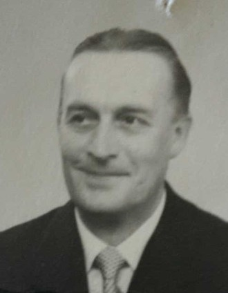
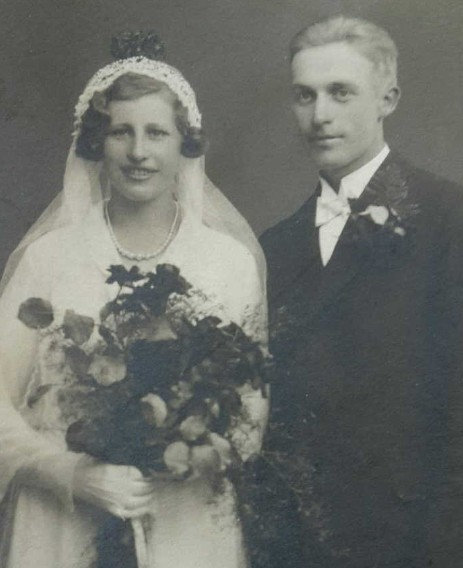

Agnes Maria Lönnberg f Karlsson.

Född 21 jul 1912 i Snörum, Mariehov, Drothem (E) 9 .
Död 27 jun 2002 i Birkagården, Söderköping, Sankt Laurentii (E) 2 .
|
Född
18 apr 1909
i Bleckstad, Drothem (E)
1
.
Död 12 sep 1979 i Kristinelund, Drothem (E) 2 . |
 |
|
Axel Vilhelm Lönnberg
Född 18 apr 1909 i Bleckstad, Drothem (E) 1 . Död 12 sep 1979 i Kristinelund, Drothem (E) 2 . |
|||

Bröllopsfoto Agnes och Axel 1933
|
Gift
3 jun 1933
i Drothem (E)
8
.
Agnes Maria Lönnberg f Karlsson.
Född 21 jul 1912 i Snörum, Mariehov, Drothem (E) 9 . Död 27 jun 2002 i Birkagården, Söderköping, Sankt Laurentii (E) 2 . |
 Adoptivbarn
Adoptivbarn
Framställd 12 aug 2026 med hjälp av Disgen version 2025.